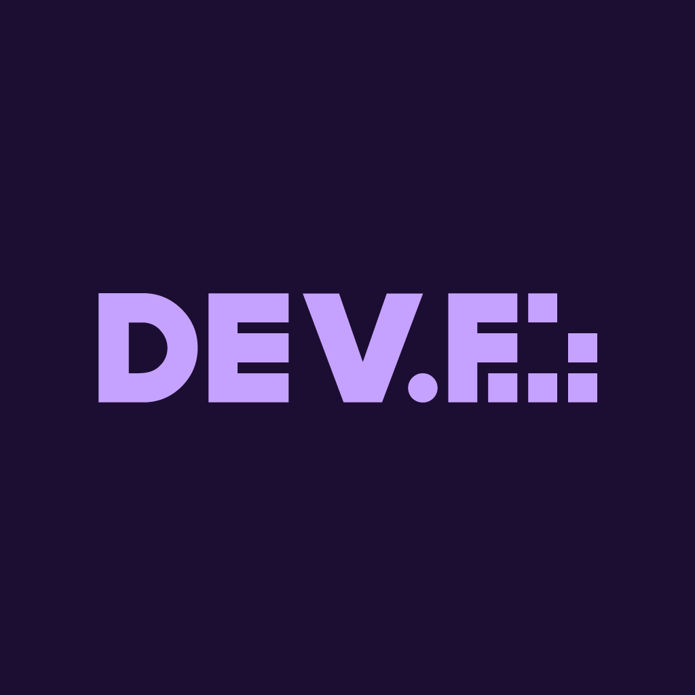

Roberto Miguel Baños Cordero
full stack developer
Telefono:782-122-17-89
Email:ikermiguel2210@gmail.com
Telefono:782-122-17-89
Email:ikermiguel2210@gmail.com
mi preparación ha sido de forma autónoma desde los 13 años me nació la iniciativa de aprender programación en una escuela llamada antboots ahí inicié mi preparación donde aprendí programación con arduino y componentes básicos de un sitio web con el paso del tiempo me fui preparando de forma autónoma en la plataforma de udemy y fue aumentando mis conocimientos que ala edad de 15 años empecé a impartir clases, de ahí me capacite en Dev.f alcanzado en máximo nivel del curso y por el momento cursando el Master in code
